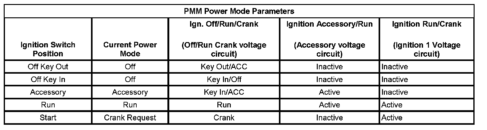

Diagnostic System Check - Vehicle
DIAGNOSTIC SYSTEM CHECK - VEHICLE
1. Verify that none of the following preliminary inspections/tests reveal the cause of the vehicle concern before beginning diagnosis:
- Ensure that the battery is fully charged. Refer to Battery Inspection/Test. Battery Inspection/Test
- Ensure that the battery cables are clean and tight.
- Inspect for any open fuses. Refer to Power Distribution Schematics and Electrical Center Identification Views.
- Ensure that the grounds are clean, tight, and in the correct location. Refer to Ground Distribution Schematics and Power and Grounding Component Views.
- Inspect the easily accessible systems or the visible system components for obvious damage or conditions that could cause the concern.
- Inspect for aftermarket devices that could affect the operation of the system.
- Search for applicable service bulletins.
- If the preceding inspections/tests resolve the concern, go to Diagnostic Repair Verification.
2. Install a scan tool. Verify that the scan tool powers up.
- If the scan tool does not power up, refer to Scan Tool Does Not Power Up. Scan Tool Does Not Power Up
3. Ignition ON, Engine OFF, verify communication with all of the control modules on the vehicle. Refer to Data Link References for information on the modules you should expect to communicate. Data Link References
- If the scan tool does not communicate with one or more of the expected control modules, refer to Data Link References. Data Link References
4. Verify that the following DTCs are not set: U1814, B1428.
- If either of the DTCs are set, refer to DTC U1814 or DTC B1428. U1814 B1428
5. IMPORTANT: Open the driver door to ensure retained accessory power (RAP) mode is inactive during this test. The engine may start during this test. Turn the engine OFF as soon as the crank power mode has been observed.
With a scan tool, access the Body Control Module Power Mode data display list. Verify that all the parameters listed in the following table correspond to the ignition key position. The PMM Power Mode parameters table below illustrates the correct state of these parameters (circuits) with the corresponding ignition switch positions. The circuits related to the parameters are in parenthesis.
- If any of the power mode parameters do not match in any ignition switch position, refer to Power Mode Mismatch. Power Mode Mismatch
6. Ignition ON, view the security indicator. The security indicator should not remain illuminated after the vehicle bulb check has completed.
- If the security indicator remains illuminated after the bulb check, refer to Diagnostic Trouble Code (DTC) List - Vehicle and diagnose any of the following theft deterrent DTCs set as current:B1000, B302A, B3031, B3055, B3060, B3935, B3976, P0513, P0633, P1629, P1631, or P1632. Diagnostic Trouble Code Descriptions
7. Attempt to start the engine. Verify that the engine cranks.
- If the engine does not crank, refer to Symptoms - Starting and Charging. Symptoms - Engine Electrical
8. Attempt to start the engine. Verify the engine starts and idles.
- If the engine does not start and idle, refer to Engine Cranks but Does Not Run. Engine Cranks But Does Not Run
9. IMPORTANT:
- Do not clear any DTCs unless instructed to do so by a diagnostic procedure.
- If any DTCs are Powertrain related DTCs, select Capture Info in order to store the DTC information with the scan tool.
Use the appropriate scan tool selections to obtain DTCs from each of the vehicle modules. Verify there are no DTCs reported from any module.
1. If any DTCs are present, refer to Diagnostic Trouble Code (DTC) List - Vehicle and diagnose any current DTCs in the following order: Diagnostic Trouble Code Descriptions
2. DTCs that begin with a U.
3. Any of the following: B1000, B1001, B1008, B1011, B1019, C0550, C0569, P0601, P0602, P0603, P0604, P0606, P0607, P060D, P062F, P1621, P2101, or P2610.
4. Any of the following: B1325, B1370, B1424, B1517, C0895, C0899, C0900, P0562, or P0563.
5. Component level DTCs.
6. System level DTCs.
7. Any remaining DTCs.
10. If the customer concern is related to inspection/maintenance (I/M) testing, refer to Inspection/Maintenance (I/M) System Check. Inspection/Maintenance (I/M) System Check
PMM Power Mode Parameters:

- If none of the previous tests or inspections addresses the concern, refer to Symptoms - Vehicle. Symptoms - Vehicle